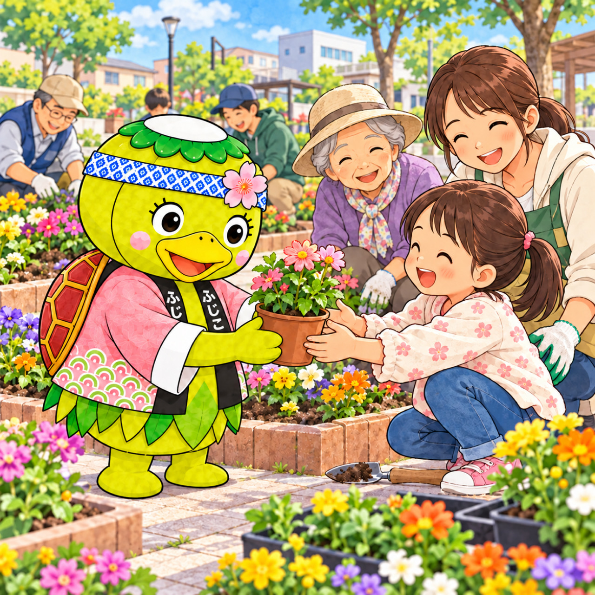

お店めぐりDX・画像共有の動作確認
お店の画像を9:16で大きく共有
画像を準備しています…

元画像を切らず、1080×1920の9:16画像へ自動変換します。この確認画面から画像をサーバーには保存しません。DXへの入口はコピーする投稿文のリンクです。
お店めぐりDX・画像共有の動作確認
画像を準備しています…

元画像を切らず、1080×1920の9:16画像へ自動変換します。この確認画面から画像をサーバーには保存しません。DXへの入口はコピーする投稿文のリンクです。